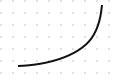
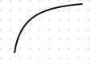
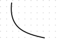
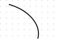
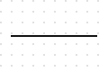
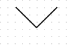

微積分中一階導數決定函數曲線的「傾斜方向（遞增/遞減）」，二階導數則決定曲線的「彎曲方向（凹凸性）」。
以下為您整理完整的導數正負號與曲線幾何形狀對照表，方便您日後對照閱讀任何工程與微積分圖表：
| 一階導數 y′(x)（斜率/傾斜度） | 二階導數 y′′(x)（斜率變化率/凹凸性） | 幾何形狀特徵與趨勢描述 | 圖形視覺示意 | 熱力學與物理常見實例 |
|---|---|---|---|---|
| 正數 ($>0$) | 正數 ($>0$) | 向上遞增 + 凹向上 （越往右上升得越快） |
 |
熱力學中過熱蒸氣的定壓熱容量曲線、指數成長曲線 |
| 正數 ($>0$) | 負數 ($<0$) | 向上遞增 + 凹向下 （越往右上升得越慢） |
 |
對數成長曲線、邊際效益遞減曲線 |
| 負數 ($<0$) | 正數 ($>0$) | 向下遞減 + 凹向上 （越往右下降得越慢） |
 |
$P-v$ 圖中的多變壓縮線、等溫線、等熵線 |
| 負數 ($<0$) | 負數 ($<0$) | 向下遞減 + 凹向下 （越往右下降得越快） |
 |
向下加速衰減曲線 |
| 等於 0 ($=0$) | 等於 0 ($=0$) | 水平直線 （無傾斜度、無彎曲） |
 |
$P-v$ 圖中兩相共存區（蒸發/冷凝）的等壓等溫線 |
| 任意值 | 等於 0 ($=0$) | 傾斜直線 （固定斜率、無彎曲） |
 |
理想氣體在 $V-T$ 圖上的定壓過熱線 |
速記技巧總結
-
看一階導數 $y'(x)$（決定方向）：
-
正 $(+)$ $\rightarrow$ 右高左低（向上斜）
-
負 $(-)$ $\rightarrow$ 左高右低（向下斜）
-
-
看二階導數 $y''(x)$（決定碗口方向）：
-
正 $(+)$ $\rightarrow$ 凹向上（像一個正常的碗，能裝水，開口朝上）
-
負 $(-)$ $\rightarrow$ 凹向下（像倒扣的碗，會漏水，開口朝下）
-